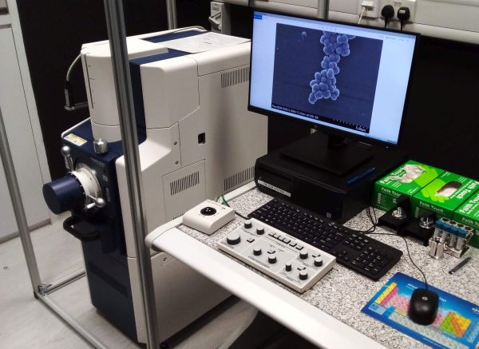

This compact scanning electron microscope (SEM) can be used for standard SEM imaging (visualising surface topography) of biological or material sciences samples suitable for SEM observation. It features detectors for secondary electrons and for backscattered electrons as well as an ultra-variable-pressure detector for imaging non-conductive samples at low vacuum. A colour camera inside the sample chamber facilitates selecting the imaged area. Under optimal conditions the microscope can achieve image resolution as good as 4 nm. Equipment for preparing biological samples for SEM observation (tissue processor, critical point dryer and sputter coater) is also available at SCELSE.
For more information refer to sample preparation protocol (PDF) and a Generic RA for sample preparation equipment (PDF).
| Usage fees [SGD/hour] | NTU | Academia | Industry |
| 30 | 45 | 72 | |
| Location | ABIF, SCELSE, B2 (SBS-B2n-27P.6) | ||
| Contact | abif@e.ntu.edu.sg | ||